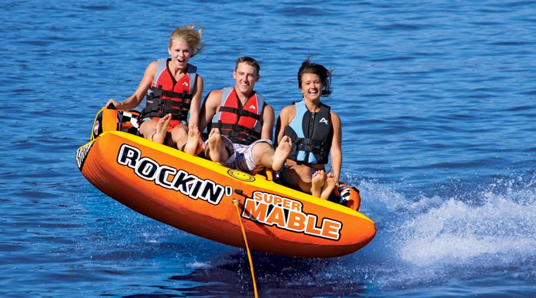
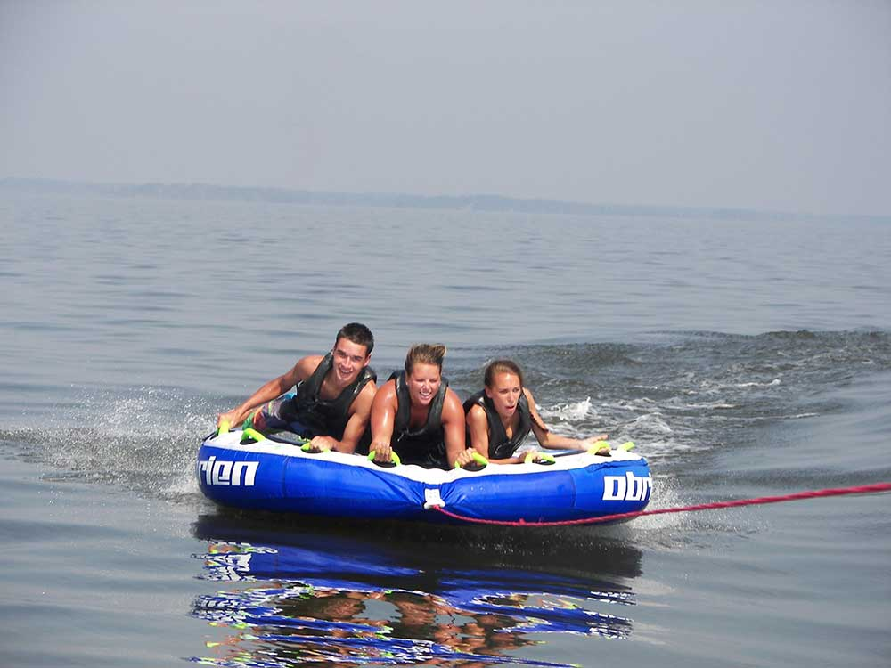

Tubing


Tubing is one of the easiest water sports to try. All tubing requires is using arm strength to hold. The boat can be at any speed to pull a tuber. It is a sport meant for any age.
There are many different size tubes to hold multiple people also, different shaped tubes.
To keep tubing safe it is required to have at least two people in the boat, one to drive and one to spot the riders.
Tubing can be dangerous just like any sport if the riders get whipped around too much. Also, the driver has to be caution of other boats that are out on the water.
Tubing behind a boat